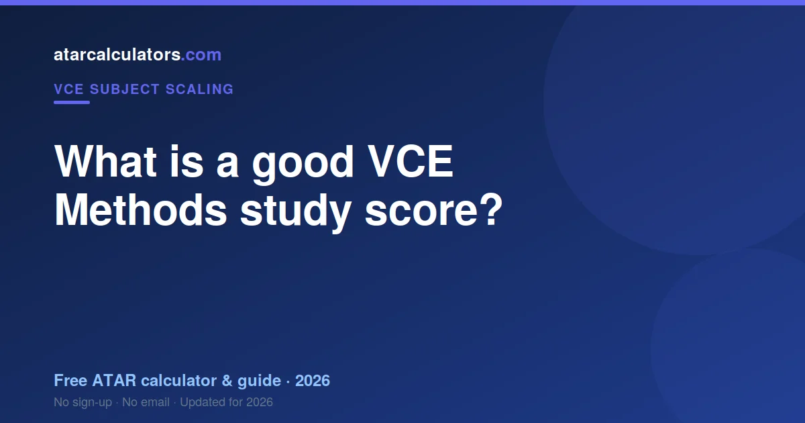
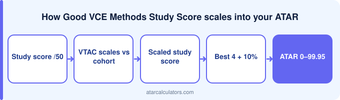

In VCE Methods, the average study score is 30, a study score of 35 or above is good, and 40 or above is excellent. Because Methods scales up strongly, your raw score contributes well above face value. But what counts toward your ATAR is the scaled study score, not the raw number alone. A high ATAR usually means strong scores across several subjects, not one.
Key takeaways
- The average study score is 30.
- 35+ is good, 40+ is excellent.
- A 40 is roughly the top 9 per cent.
- Methods scales up strongly.
- The scaled score is what counts.
- A high ATAR needs strong scores across subjects.

The average study score
By design, the average VCE study score in every subject is set to 30 each year. So a 30 is exactly average, in Methods and in every other subject.
About two thirds of students score between roughly 23 and 37. This holds across subjects, because the average is fixed at 30. So a score above 30 is above average.
What counts as a good Methods score?
A good Methods study score carries further than the number suggests, because Methods scales up. It is also a prerequisite for much of university.
Is a 35 study score good in Methods?
Is 35 good in Methods? Above the midpoint, and Methods scaling lifts it meaningfully. Many courses want Methods regardless of the score.
Why scaling matters
VTAC scales Methods up, sitting just below Specialist. Its cohort is large, ambitious and prerequisite-driven.
The score for a high ATAR
For a high ATAR, Methods is a strong Primary Four member. Its scaling is reliable and its cohort is large enough that the numbers are stable.
How hard is a high Methods score?
A high Methods score is hard because there are two exams with different demands, and most students are slow on the technology-free one.
How to reach a strong score
Reaching a high Methods score means volume with full setting-out, and sitting each paper separately to time.
Check your scaling
To see how a Methods score scales, use our VCE Methods scaling calculator. It shows roughly how a raw score converts, so you can see how the subject fits your ATAR.
Treat the result as indicative, since scaling changes each year. Your study score is what your scaled score depends on.
The study score range
Methods study scores spread around 30 at the middle out to 50, and scaling lifts the distribution.
What a score means as a rank
Your Methods study score is your percentile inside a large, capable cohort.
How scores combine into an ATAR
Methods combines with Specialist, the sciences and commerce. It is the maths most VCE pathways assume.
Setting a realistic target
Set your Methods target from your course prerequisites first — many require it regardless of score.
Lifting your score over the year
Lifting your Methods score means problems, timed, cold, with the working written down.
Comparing scores across subjects
Across your studies, Methods is the one most likely to be a hard prerequisite. That matters beyond the score.
Tracking your progress
Track Methods progress separately for each exam. Combining them hides which is slow.
A good score is personal
A good personal Methods score is one that clears your course prerequisite and holds a Primary Four place.
Common questions
What is a good VCE Methods study score?
In VCE Methods, a study score of 35 or above is good and 40 or above is excellent, since the average is fixed at 30. Remember Methods scales up strongly, so what counts toward your ATAR is the scaled study score, not the raw number alone.
Is a 35 study score good in Methods?
Yes. A 35 is a good Methods study score, well above the average of 30 and in roughly the top quarter of students. It is a strong base for a solid ATAR, and 40 plus marks an excellent result.
What is the average study score in Methods?
The average study score in Methods is 30, because VTAC sets the average in every subject to 30 each year. About two thirds of students score between roughly 23 and 37, so a score above 30 is above average.
What Methods study score do I need for a high ATAR?
There is no single score that guarantees a high ATAR, since your ATAR comes from your scaled scores across your best subjects combined. As a rough guide, scores in the 40s across your subjects point toward a high ATAR, though scaling and your subject mix matter.